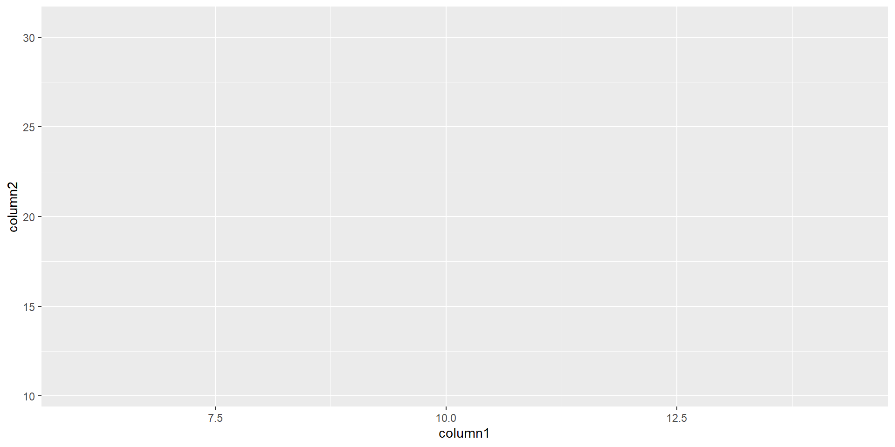
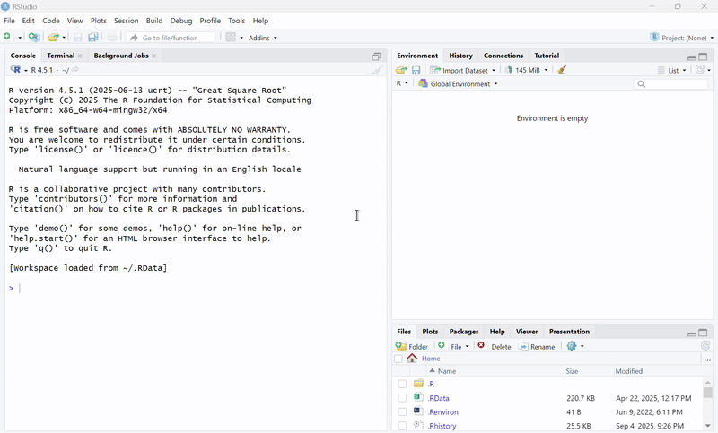
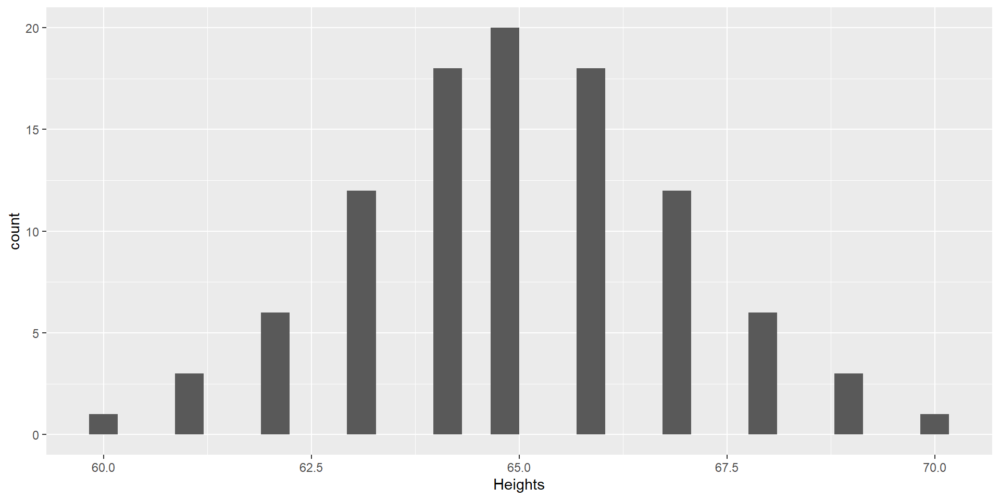
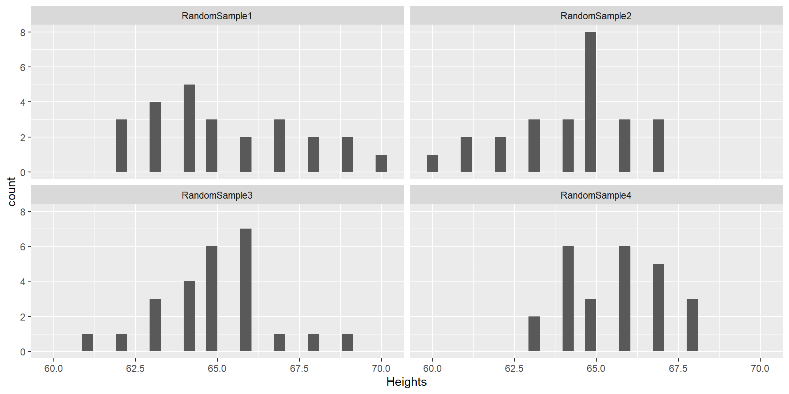
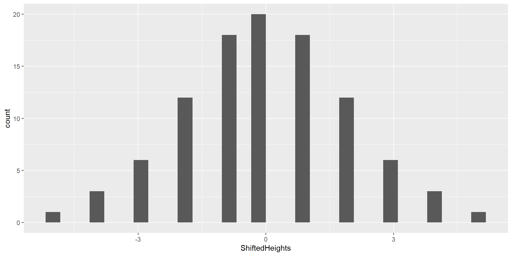
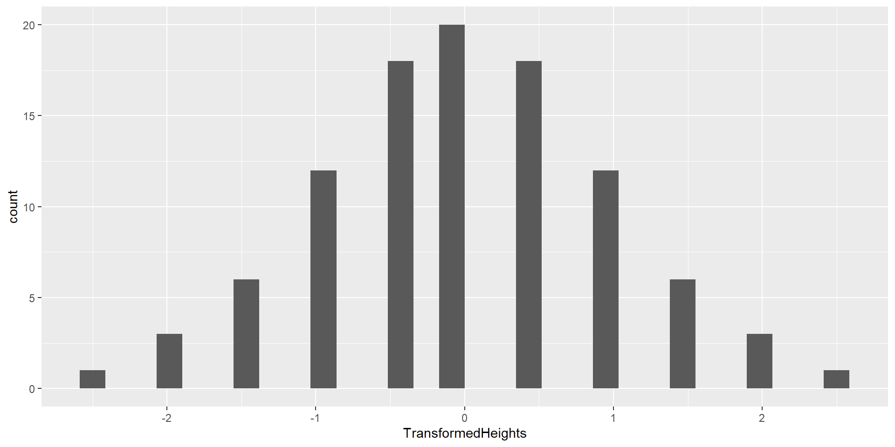

❓ Where do you make your lab2 folder?
Project > New Project > Existing Directory
lab2 folder
tidyverse?firstData.csv?ggplot2?sample_heights.csv?ggplot()+ symbol
Now it’s time to work on your lab2.Rmd file!
# A tibble: 6 × 2
Heights RandomSample
<dbl> <chr>
1 62 RandomSample1
2 65 RandomSample1
3 63 RandomSample1
4 64 RandomSample1
5 69 RandomSample1
6 68 RandomSample1


